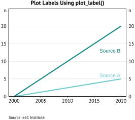
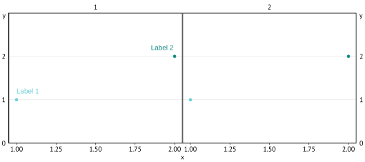

Why labels?
Coloured labels placed directly on the plot are better than graph legends when you are making the final, polished version of a graph for presentations, notes and papers for three key reasons.
Labels make it much easier for the reader to identify what group each colour corresponds to, without having to do the rapid eye twitch from the graph to the legend and back again. Repeat this for every group present on the graph and soon you have a recipe for eyestrain.
Labels make more efficient use of the available space on a graph by removing the need to make room for a legend. Legends create unused white space around the legend element and force the plot to be shorter or narrower than it otherwise would be.
Finally, labels are more aesthetic than legends.
Adding labels with plot_label()
The simplest way to add plot labels is to use the
plot_label() function in theme61. The
following code provides an example. Most of the code is to set up the
mock data and create a graph, the only two lines that are important are
the plot_label() lines.
plot_label() requires you to provide the text of the
label (label), and the x and y
positioning. For more information, see the documentation
(?plot_label).
When using this function, make sure the wording of the vector of label names in the label argument are exactly the same as the colour/fill aesthetic being plotted, and the order of the label vector matches the order of the colour/fill aesthetic for the ordering of the colours.
One way to ensure this is by setting the column in the data to be an
ordered factor, and calling the label names using
levels(data$col_name).
# Mock data
graph_data <- CJ(
x = 2000:2020,
source = ordered(c("Source A", "Source B"))
)
graph_data[source == "Source A", y := seq(0, by = 0.25, length = 21)]
graph_data[source == "Source B", y := seq(0, by = 1, length = 21)]
# Graph
graph <- ggplot(graph_data, aes(x, y, colour = source)) +
geom_line(linewidth = 1) +
plot_label(
label = levels(graph_data$source),
x = c(2016, 2016),
y = c(6, 13)
) +
labs_e61(
title = "Plot Labels Using plot_label()",
sources = c("e61 Institute"),
x = NULL, y = "n"
)
save_e61("../man/figures/label-plot-label.svg", graph)
knitr::include_graphics("../man/figures/label-plot-label.svg")
Facets
When you have a facetted graph, you must specify the
facet_name and facet_value arguments in
plot_label().
data <- data.frame(
x = rep(c(1, 2), 2),
y = rep(c(1, 2), 2),
f_var = factor(c(1, 1, 2, 2)),
group = factor(c(1, 2, 1, 2))
)
p1 <-
ggplot(data, aes(x, y, colour = group)) +
facet_wrap(~f_var) +
geom_point() +
scale_y_continuous_e61(c(0, 3, 1)) +
plot_label(
label = c("Label 1", "Label 2"),
x = c(1, 1.85),
y = c(1.2, 2.2),
facet_name = "f_var",
facet_value = "1"
)
save_e61("../man/figures/label-facet-1.svg", p1)
knitr::include_graphics("../man/figures/label-facet-1.svg")
If you want to place the labels on different facets, simply supply a
vector to facet_value with which facet you want each label
to appear in.
p2 <- ggplot(data, aes(x, y, colour = group)) +
facet_wrap(~f_var) +
geom_point() +
scale_y_continuous_e61(c(0, 3, 1)) +
plot_label(
label = c("Label 1", "Label 2"),
x = c(1, 1.85),
y = c(1.2, 2.2),
facet_name = "f_var",
facet_value = c("1", "2")
)
save_e61("../man/figures/label-facet-2.svg", p2)
knitr::include_graphics("../man/figures/label-facet-2.svg")Graphs with many categories
Sometimes you have many categories, far too many to want to plot
manually even with the data.frame approach. If you are
willing to sacrifice the ability to specify the exact location of each
label, you could use geom_text_repel() to add appropriately
coloured text labels for each colour/fill aesthetic.
# Mock data
graph_data <- CJ(
year = 2000:2020,
source = paste("Source", LETTERS[1:5])
)
graph_data[, value := sample(5, nrow(graph_data), replace = TRUE)]
# Graph
graph <- ggplot(graph_data, aes(x = year, y = value, fill = source)) +
geom_area(linewidth = 1) +
# We only need one label for each group, ideally on the far
# right of the graph, so we keep the last year only
geom_text_repel(data = graph_data[year == max(year)],
aes(x = year, y = value, label = source, colour = source),
# This forces the text to appear further right than 2020
xlim = c(2020, NA),
# This moves the vertical position of the label downwards
position = position_stack(vjust = 0.5),
# This hides the line that joins the label to the graph element
segment.color = NA,
size = 4) +
# Extends the right-side of the graph to create room for the labels
scale_x_continuous(limits = c(NA, 2026)) +
scale_colour_e61() +
labs_e61(
title = "Use geom_text_repel to Show Many Labels Automatically",
sources = c("e61 Institute"),
x = NULL, y = "n"
)
save_e61("../man/figures/label-cats.svg", graph)
knitr::include_graphics("../man/figures/label-cats.svg")